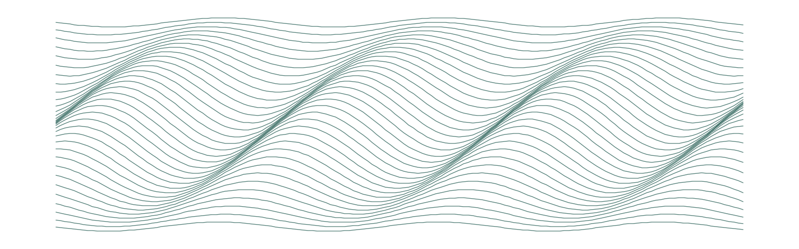

Prova
Quando a tela do sistema não prova a contratação
Documento unilateral, ônus da prova e o problema de provar fato negativo.
12 de agosto de 2026Bruno Hardt

A defesa é conhecida. O consumidor afirma que nunca contratou determinado serviço, e a fornecedora junta à contestação a captura de tela do próprio sistema, mostrando a contratação registrada. O documento tem aparência de prova: tem data, número de protocolo, às vezes o endereço de IP e a menção a um aceite eletrônico.
Só que ele foi produzido pela parte que o invoca, sobre um sistema que ela mesma controla, e sem participação de quem se diz prejudicado.
O que a tela é
É documento unilateral. Não perde valor por isso - nenhum documento é descartado por ter sido feito por uma das partes -, mas o seu peso depende de não estar sozinho. Sozinha, a tela prova que existe um registro no sistema da fornecedora, que é precisamente o que ninguém discute: o consumidor não nega que a cobrança apareça; nega que a tenha contratado.
Vale ser literal sobre o que se está juntando. Uma captura de tela é a fotografia de como um sistema exibiu, num instante, o conteúdo de um registro. Não é o registro, não é o log que o originou, e não carrega nada que permita saber quando aquele dado entrou ali, por qual caminho, nem se foi alterado depois. Tudo isso existe, e existe do lado de quem juntou o print. É por essa razão que a insuficiência da tela raramente é uma questão de credibilidade da fornecedora: é uma questão de o documento escolhido não conter a informação que decide a causa.
Ementa (trecho)
[…] 7. Reconhecida a inversão do ônus da prova, incumbia à fornecedora demonstrar, de forma clara e inequívoca, a efetiva contratação dos serviços digitais cobrados, ônus do qual não se desincumbiu. 8. A juntada de regulamento promocional e a alegação genérica de aceite eletrônico não constituem prova suficiente da manifestação de vontade livre, informada e expressa do consumidor, especialmente quanto à inclusão de serviços de valor agregado e seus respectivos custos. 9. A ausência de comprovação da contratação, aliada ao descumprimento do dever de informação previsto no art. 6º, III, do CDC, caracteriza falha na prestação do serviço e prática abusiva, tornando indevidas as cobranças realizadas. […]
De quem é o ônus
A distribuição não é obscura. Impugnada a contratação, quem tem o sistema, o registro e a gravação é quem consegue produzir a prova, e é de quem pode produzi-la que ela se exige.
Ementa
RECURSO ESPECIAL. PROCESSUAL CIVIL. ACÓRDÃO PROFERIDO EM IRDR. CONTRATOS BANCÁRIOS. EMPRÉSTIMO CONSIGNADO. DOCUMENTO PARTICULAR. IMPUGNAÇÃO DA AUTENTICIDADE DA ASSINATURA. ÔNUS DA PROVA. RECURSO ESPECIAL PARCIALMENTE CONHECIDO E, NESSA EXTENSÃO, DESPROVIDO. 1. Para os fins do art. 1.036 do CPC/2015, a tese firmada é a seguinte: "Na hipótese em que o consumidor/autor impugnar a autenticidade da assinatura constante em contrato bancário juntado ao processo pela instituição financeira, caberá a esta o ônus de provar a sua autenticidade ( CPC, arts. 6º, 368 e 429, II)."2. Julgamento do caso concreto. 2.1. A negativa de prestação jurisdicional não foi demonstrada, pois deficiente sua fundamentação, já que o recorrente não especificou como o acórdão de origem teria se negado a enfrentar questões aduzidas pelas partes, tampouco discorreu sobre as matérias que entendeu por omissas. Aplicação analógica da Súmula 284/STF.2.2. O acórdão recorrido imputou o ônus probatório à instituição financeira, conforme a tese acima firmada, o que impõe o desprovimento do recurso especial. 3. Recurso especial parcialmente conhecido e, nessa extensão, desprovido.
Vale registrar que essa regra não nasceu para punir a fornecedora. Ela nasce de uma constatação de fato: a prova está toda de um lado só. Quando o processo desloca esse ônus, não está presumindo a fraude; está pondo o encargo onde ele pode ser cumprido.
O que se tem aceitado no lugar da tela
Aqui a discussão fica interessante, porque a linha contrária existe, é recente, e é do próprio Superior Tribunal de Justiça. O mesmo tribunal que atribui à instituição o ônus de provar a autenticidade da assinatura já disse, com todas as letras, que esse ônus não se cumpre necessariamente por perícia.
Ementa (trecho)
[…] 3. O Tribunal de origem afirmou que a instituição financeira comprovou a regularidade da contratação por meio da apresentação do contrato de empréstimo consignado devidamente assinado e do comprovante de transferência (TED) do valor mutuado para conta bancária de titularidade da autora, que não impugnou o recebimento nem a utilização dos valores, nem logrou demonstrar qualquer irregularidade específica, de modo que alegações genéricas de fraude não afastam a presunção de veracidade do documento particular ( CPC, art. 408) nem a presunção de legitimidade da contratação. […] 6. A jurisprudência consolidada do STJ, inclusive no Tema 1.061, atribui à instituição financeira o ônus de provar a autenticidade da assinatura e a regularidade da contratação quando impugnadas pelo consumidor, mas não impõe, em todos os casos, a obrigatoriedade de prova pericial grafotécnica ou documentoscópica, sendo suficiente que o banco apresente provas robustas e idôneas, como contrato assinado e comprovante de crédito na conta do consumidor, cabendo ao juiz, como destinatário da prova, avaliar a necessidade de outras diligências probatórias. […]
Nos tribunais estaduais o desenho é o mesmo. Contratação por aplicativo com senha pessoal, chave de segurança, IP e hora do aceite, sem impugnação específica dos documentos, tem sido reconhecida como válida.
Ementa (trecho)
[…] 1. A contratação digital de empréstimo consignado é válida quando comprovada por elementos técnicos como biometria, geolocalização, hash de assinatura e identificação do aceite." " 2. A ausência de impugnação específica quanto à autenticidade dos documentos afasta a alegação genérica de falsidade." " […]
Convém ler esses julgados pelo que eles efetivamente decidem. Nenhum deles valida a captura de tela pela mera existência dela. O que validam é a contratação, porque ao lado da tela vieram elementos que não saíram da base da própria fornecedora, ou que podem ser conferidos fora dela: geolocalização, biometria facial, registro de dispositivo e, em quase todos, o dinheiro depositado na conta do próprio autor.
Essa é a linha divisória real, e ela não passa entre documento unilateral e documento bilateral. Passa entre registro auditável e captura de tela. Um dossiê eletrônico permite verificar autoria e integridade por caminhos independentes; o print permite verificar que alguém apertou a tecla de captura.
Onde a linha contrária para
Para exatamente aí. Quando o conjunto digital vem incompleto - o contrato sem o relatório de autenticação, o aceite sem o log, a tela sem nada em volta -, o mesmo tribunal mantém a inexistência da contratação.
Ementa
CIVIL E PROCESSUAL CIVIL. AGRAVO EM RECURSO ESPECIAL. AÇÃO DECLARATÓRIA DE INEXISTÊNCIA DE RELAÇÃO CONTRATUAL. ALEGAÇÕES GENÉRICAS. SÚMULA N. 284/STF. CONTRATAÇÃO NÃO RECONHECIDA. AUSÊNCIA DE PROVA DO NEGÓCIO JURÍDICO. SÚMULA N. 7/STJ. 1. O recurso não comporta conhecimento, visto que a parte indica dispositivos que teriam sido violados sem, contudo, impugnar os motivos elencados pelo Tribunal de origem para considerar inexistente o contrato, o que atrai os preceitos da Súmula n. 284/STF. 2. O Tribunal de origem consignou que, embora o recorrente tenha juntado o contrato digital, não juntou o dossiê digital completo necessário para comprovar a validade da assinatura e que foi dada ciência à autora dos termos da relação contratual, pelo que considerou inexistente a contratação. Rever esse entendimento demandaria reexame de matéria fático-probatória e interpretação das cláusulas contratuais, procedimentos vedados a esta Corte, em razão dos óbices das Súmulas n. 5 e 7/STJ.Agravo interno improvido.
O fato negativo
Do outro lado da mesa, exigir que o consumidor prove que não contratou é pedir prova de fato negativo. Ele não tem como demonstrar a inexistência de um evento que, por definição, não deixou rastro na esfera dele.
Ementa
CÍVEL. RECURSO INOMINADO. TELEFONIA. COBRANÇA POR PACOTE DE SERVIÇOS ADICIONAIS NÃO SOLICITADOS. PRÁTICA ABUSIVA. FALHA NA PRESTAÇÃO DE SERVIÇOS. APLICAÇÃO DO ENUNCIADO 1.8. DAS TURMAS RECURSAIS PARANAENSES. DANO MORAL CONFIGURADO. DANO MATERIAL. RESTITUIÇÃO SOMENTE DOS VALORES COMPROVADAMENTE PAGOS. APLICAÇÃO DO ARTIGO 877 DO CÓDIGO CIVIL E PARÁGRAFO ÚNICO DO ARTIGO 42 DO CÓDIGO DE DEFESA DO CONSUMIDOR. RECURSO PARCIALMENTE PROVIDO. 1. Restou incontroversa a cobrança por serviços adicionais (serviço VT – dada – net – pacotes). A operadora não comprovou a contratação do serviço adicional, pela recorrente, quedando-se inerte, não se desincumbindo do ônus probatório (art. 333,II, CPC). 2. Evidente a falha na prestação do serviço, por expor o autor à desnecessária situação de desconforto, gerada em função do defeito na prestação do serviço. Resta evidenciada a violação ao princípio da boa-fé objetiva (artigo 14, CDC), visto que deveres anexos ao contrato não foram atendidos, frustrando as legítimas expectativas do consumidor. 3. A disponibilização e cobrança por serviços não solicitados pelo usuário caracteriza prática abusiva e, se tiver havido pagamento, restituição em dobro, invertendo-se o ônus da prova, nos termos do art. 6º, VIII, do CDC, visto que não se pode impor ao consumidor a prova de fato negativo. (Enunciado 1.8 das Turmas Recursais do Paraná). , resolve esta Turma Recursal, por unanimidade de votos, conhecer do recurso e, no mérito, dar- lhe parcial provimento, nos exatos termos do vot (TJPR - 2ª Turma Recursal - 0030858-81.2010.8.16.0021 - Cascavel - Rel.: Juíza Manuela Tallão Benke - J. 15.10.2012)
É esse desequilíbrio que sustenta a inversão, e é ele que explica por que a impugnação do consumidor precisa ser específica para valer alguma coisa. Dizer “não reconheço” não ataca nada. Dizer que o IP não é o seu, que a geolocalização aponta para cidade onde ele não estava, que o aparelho não é o dele, que o valor nunca entrou na conta: isso ataca. A jurisprudência que aceita o registro eletrônico é, lida de perto, o roteiro do que a inicial tem de enfrentar.
O silêncio sobre o resto
Há ainda o que não foi juntado. Intimada a exibir o contrato, a gravação ou o relatório de autenticação, e não os exibindo, a fornecedora se expõe à presunção de veracidade dos fatos que a outra parte pretendia provar. É o art. 400 do Código de Processo Civil, e ele não pede interpretação criativa: não juntar o que se tinha, quando se foi mandado juntar, é em si um fato nos autos.
Na prática isso se prepara cedo. O pedido de exibição feito ainda na inicial, descrevendo o documento pretendido em vez de pedir “todos os documentos relativos à contratação”, é o que transforma o silêncio da contestação em consequência processual. Pedido genérico costuma ser respondido com juntada genérica, e aí a tela cumpre o papel de resposta.
Um caminho que dispensa a discussão
Às vezes a causa se decide sem entrar no mérito da tela, pelo consumo. Serviço contratado e não utilizado, com a coluna de volume zerada mês após mês na fatura emitida pela própria fornecedora, é indício forte de que a contratação não partiu de quem estava sendo cobrado. O documento que prova isso é da fornecedora também, e é ela quem o emite todo mês.
O que fica
A tela do sistema não é imprestável, e tratá-la como se fosse é uma tese ruim: os tribunais não a rejeitam pela origem. O que eles fazem é medir o conjunto em que ela aparece. A pergunta útil, portanto, não é se a tela é admissível. É o que veio com ela, o que podia ter vindo e não veio, e qual dos dois lados tinha condições de juntar o que falta.